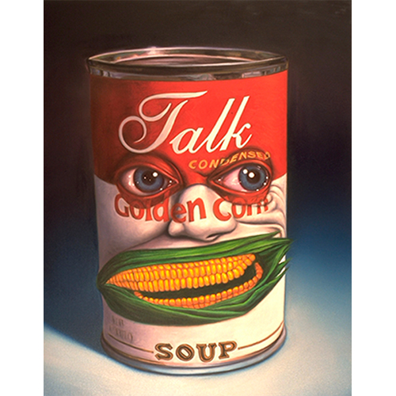

Notes
In PoPaganda, this work was erroneously reported as 48x36 inches.
This work references the Campbell’s condensed soup can. A representative image is available here .

In PoPaganda, this work was erroneously reported as 48x36 inches.
This work references the Campbell’s condensed soup can. A representative image is available here .